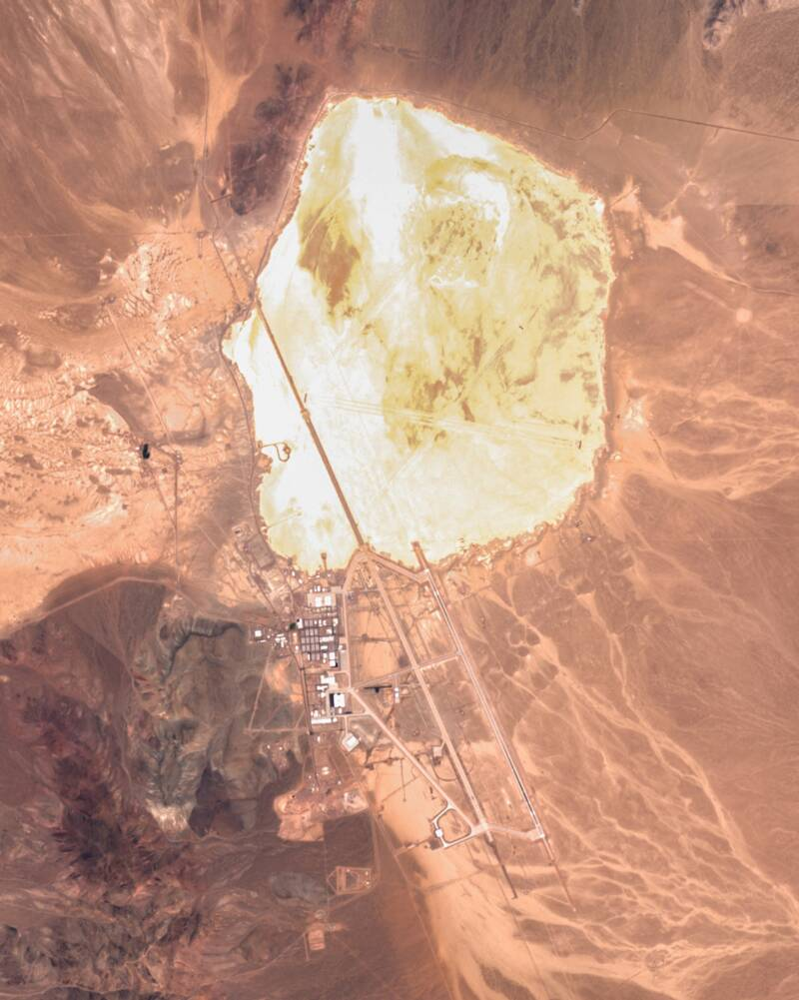

Area 51
Groom Lake, Nevada

A classified Air Force test site. The U-2 and later stealth aircraft were flown here, which accounts for many sightings, and it is the center of reverse-engineering legends. 1
Open in the interactive Watcher
Related
- Bob Lazar reverse-engineered alien craft at S-4 Claim
- Annie Jacobsen Person
- Richard M. Bissell Jr. Person
- J-Rod Person
- Bob Lazar Person
- Jeremy Corbell Person
Sources
- Area 51 Wikipedia